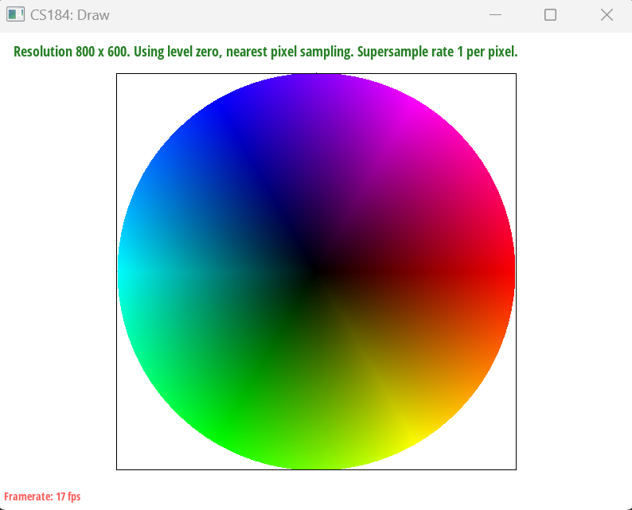
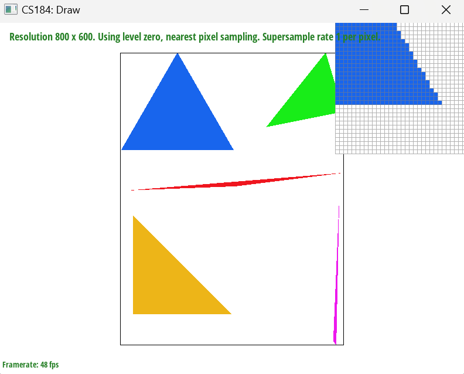
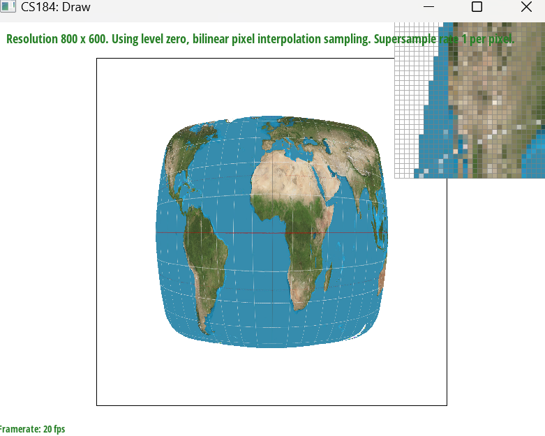
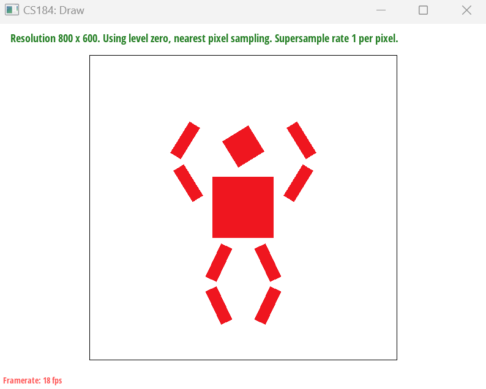
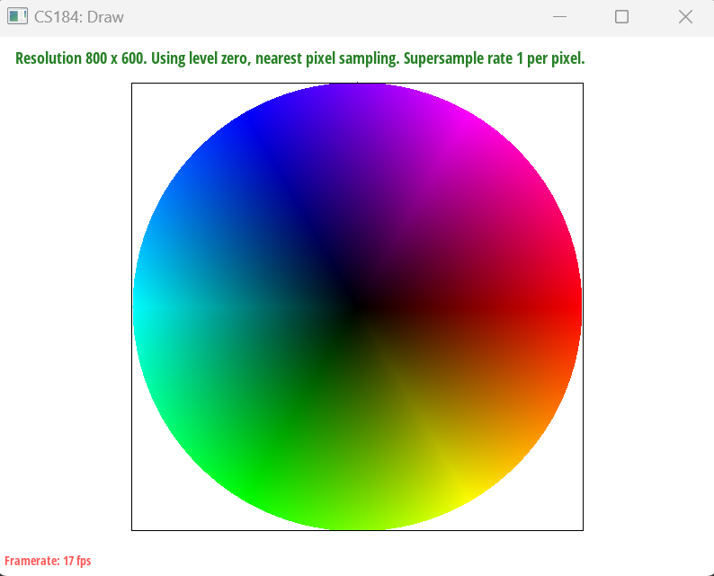
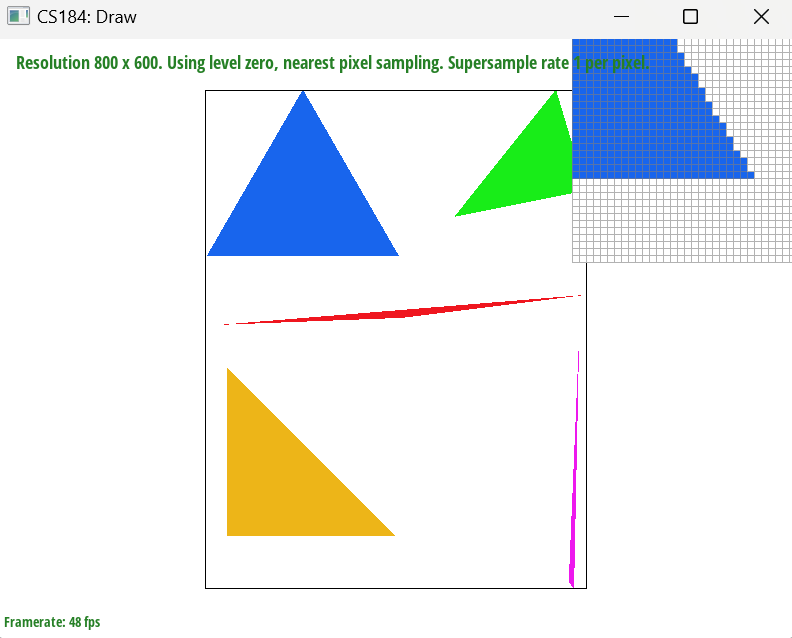
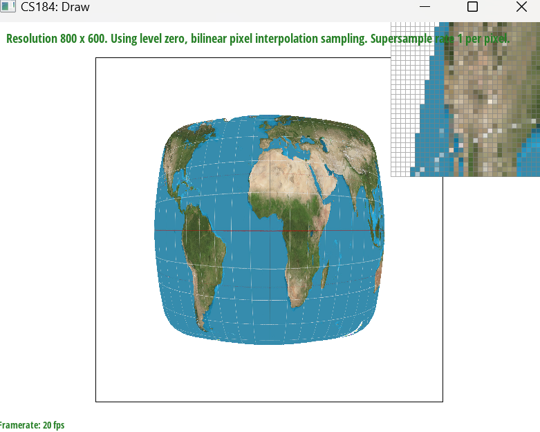
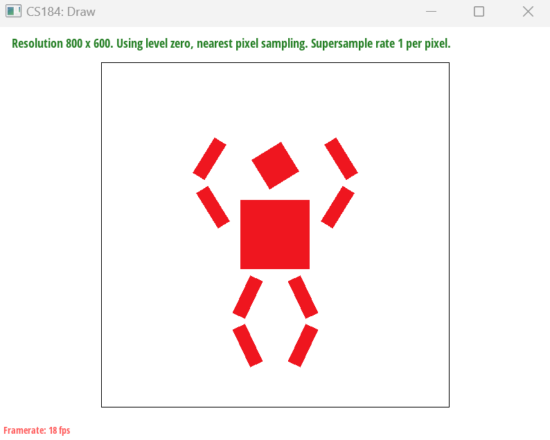

Project Details
Objective:
Create a comments section that is competitive with the industry standard and supports Gravidy's mission.
Context:
Gravidy is a social media startup with a mission of fighting downscrolling and online burnout with features that allow users to take back agency over the algorithm.
Features:
The features I have worked on so far include the following.
- Delete
- Edit
- Like
- Categorical Comments Permissions
- Sentiment Analysis (for ranking)